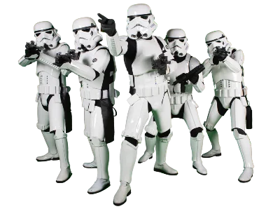

01
La República en guerra
El argumento de las películas se sitúa hace mucho tiempo, en una galaxia muy, muy lejana. Allí se ha dado durante siglos un enfrentamiento entre el "lado luminoso de la Fuerza" y el "lado oscuro". En conclusión esta secuela nos cuenta cómo la República, que está formada por la mayoría de los sistemas planetarios de la galaxia, se enfrenta a una terrible guerra, en parte por los manejos de Darth Sidious.